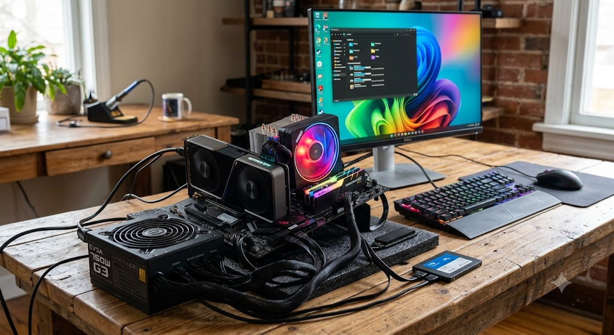

Meu primeiro post!
Por: Pedro Nicoski
Bom dia! Aqui vou compartilhar todas as informações de computadores possíveis que eu encontrar.
Aqui na imagem, um computador funcionando sem gabinete, para mostrar minimamente o que dá para fazer com um computador.